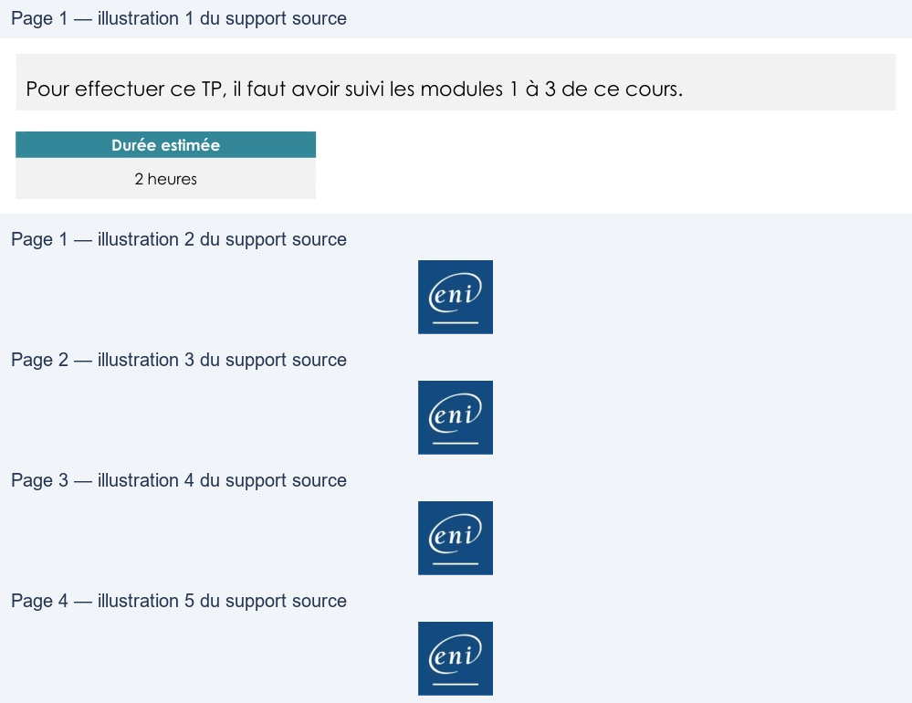

Transcription du document du Drive TSSR. La mise en forme est adaptée au Web ; les compléments IA du portail sont présentés séparément.
Sensibilisation à ITIL
TP du Module 03 - Les Publications centrales : stratégie et conception
des services
Pour effectuer ce TP, il faut avoir suivi les modules 1 à 3 de ce cours.
Durée estimée
2 heures
Etape 1 - Vérification de la disponibilité du matériel
a. Vérifier que le matériel est en stock
o Un ordinateur portable commercial + sacoche de transport
o Un dock + un câble réseau + clavier + souris
o Un écran + câble de connexion au dock
o Un téléphone IP + câble réseau
o Un smartphone + abonnement
b. Si nécessaire, commander le matériel manquant
Etape 2 - Sortie du stock du matériel
a. Sortir le matériel du stock
o Un ordinateur portable commercial + sacoche de transport
o Un dock + un câble réseau + clavier + souris
o Un écran + câble de connexion au dock
o Un téléphone IP + câble réseau
o Un smartphone + abonnement
b. Vérifier que le matériel est identifié et étiqueté
c. Mettre à jour le CMS
Etape 3 - Installation du mobilier de bureau
a. Vérifier la disponibilité d'un bureau standard et d'une chaise de bureau
o Si nécessaire, commander le mobilier de bureau
Page 1/7
© ENI – Tous droits réservés
Sensibilisation à ITIL
b. Procéder à l'installation du mobilier de bureau
Etape 4 - Vérification des prises électriques
a. Vérifier l'installation électrique pour le nouvel arrivant
b. Nombre de prises disponibles suffisantes
o Une prise pour le dock
o Une prise pour l'écran
o Une prise pour permettre la recharge du téléphone portable
c. Si le nombre de prises est insuffisant
o Prévoir l'installation de nouvelles prises
Etape 5 - Vérification des prises réseau
a. Vérifier l'installation réseau pour le nouvel arrivant
b. Vérifier qu'il y a assez de prises réseau
o Une prise pour le téléphone IP
o Une prise pour le dock de l'ordinateur
c. Vérifier qu’elles sont identifiées
d. Vérifier qu'elles sont connectées au switch
e. Mettre à jour le CMS
Page 2/7
© ENI – Tous droits réservés
Sensibilisation à ITIL
Etape 6 - Vérification du paramétrage des prises réseau
a. Vérifier le paramétrage des prises réseau sur le switch
o Vérifier les ports de connexion
o Vérifier le paramétrage des ports
Etrape 7 - Création du compte utilisateur dans l’Active Directory
a. Fournir les informations du nouvel arrivant
o Nom
o Prénom
o Service
o Rôle dans le service (permettre la gestion des droits d'accès aux ressources)
b. Mettre à jour le CMS
Etape 8 - Création du compte Microsoft 365 du nouvel arrivant
a. Fournir les informations du nouvel arrivant
o Nom
o Prénom
o Service
b. Mettre à jour le CMS
Etape 9 - Création du compte utilisateur dans GLPI
a. Fournir les informations du nouvel arrivant
o Nom
o Prénom
o Service
Etape 10 - Création du badge
a. Fournir les informations du nouvel arrivant
o Nom
o Prénom
o Service
b. Mettre à jour le CMS
Etape 11 - Création du N° téléphone
a. Fournir les informations du nouvel arrivant
o Nom
o Prénom
Page 3/7
© ENI – Tous droits réservés
Sensibilisation à ITIL
o Service
b. Mettre à jour le CMS
Etape 12 - Préparation et test du matériel
a. Vérifier le fonctionnement du téléphone IP et de son câble RJ45
o Connecter le téléphone IP sur le réseau (câble RJ45 sur le port 1 du switch du
téléphone)
o Alimenter le téléphone
o Renseigner les paramètres de l’utilisateur
▪
Passer un appel interne
▪
Passer un appel externe
▪
Recevoir un appel
b. Vérifier le fonctionnement du dock
o Alimenter le dock avec son alimentation
o Connecter le dock avec le câble réseau au port 2 du switch du téléphone
c. Tester le clavier et la souris
o Connecter les deux périphériques au dock
d. Vérifier le fonctionnement du moniteur et de son câble Display-Port
o Alimenter le moniteur
o Connecter l’écran au dock avec le câble Display-Port
e. Vérifier le fonctionnement de l’ordinateur portable
o Connecter le portable au dock
f. Déployer le système d’exploitation à partir du Serveur WDS
o Vérifier que l’ordinateur démarre en UEFI
o Booter à partir du réseau PXE pour se connecter au serveur de déploiement
▪
Choisir l’image « commercial itinérant – Win11 – Off365 »
g. Finaliser l’installation du système d’exploitation
o Procéder à la mise à jour de l’OS et du pack Office via Windows Update
o Régler la résolution du deuxième écran
h. Vérifier l’installation des logiciels
o Pack Office
▪
Word
▪
Excel
▪
Outlook
▪
PowerPoint
o Utilitaires
Page 4/7
© ENI – Tous droits réservés

Sensibilisation à ITIL
▪
Acrobat Reader DC
▪
7Zip 64bits
▪
Java 64bits
▪
Google Chrome
o Antivirus
▪
Vérification de l’installation de l’antivirus
▪
Vérification de la licence
▪
Vérification des mises à jour
o OpenVPN
▪
Vérification de l’installation de l’OpenVPN
▪
Tester la mise en place du VPN de l’entreprise
i.
Vérifier le fonctionnement de l’ordinateur portable avec son alimentation externe
o Déconnecter le portable du dock
o Connecter l’alimentation externe au portable
o Déconnecter le câble Ethernet du dock
o Connecter le câble Ethernet au port réseau de l’ordinateur
o Tester les accès aux réseaux de l’entreprise et à internet
j.
Mettre à jour le CMS
Page 5/7
© ENI – Tous droits réservés
Sensibilisation à ITIL
Etape 13 - Livraison du matériel sur site
a. Installer le téléphone IP
o Brancher le câble RJ45 sur la prise murale RJ45
▪
Câble RJ45 de 5m
▪
Noter le numéro de la prise murale dans le tableau ci-dessous
o Vérifier que le téléphone est alimenté (POE)
▪
Passer un appel en interne
▪
Passer un appel en externe
▪
Recevoir un appel
b. Installer le dock
o Brancher le dock sur le switch du téléphone IP (port 2)
▪
Câble RJ45 de 2m
o Brancher électriquement le dock
c. Installer les périphériques
o Connecter le clavier sur le dock en USB
o Connecter la souris sur le dock en USB
d. Installer le moniteur
o Brancher le câble Display-Port au dock et sur le moniteur
o Brancher électriquement le moniteur
e. Installer l’ordinateur portable
o Ouvrir la session avec un compte technicien du domaine
▪
Vérifier l’obtention d’une configuration réseau à partir du serveur DHCP
▪
Vérifier l’application des GPO du domaine
▪
Vérifier le fonctionnement du deuxième écran
o Ouvrir la session avec le compte générique « Commercial itinérant » du
domaine
▪
Vérifier l’application des GPO du domaine pour les commerciaux
itinérants
•
GPO1 :
•
GPO2 :
•
GPO3 :
•
GPO4 :
•
GPO5 :
•
GPO6 :
•
GPO7 :
Page 6/7
© ENI – Tous droits réservés
Sensibilisation à ITIL
•
GPO8 :
•
GPO9 :
•
GPO10 :
o Vérifier le déploiement des imprimantes réseau pour les commerciaux
▪
Imprimante1 :
•
Test impression
▪
Imprimante2 :
•
Test impression
▪
Imprimante3 :
•
Test impression
Page 7/7
© ENI – Tous droits réservés